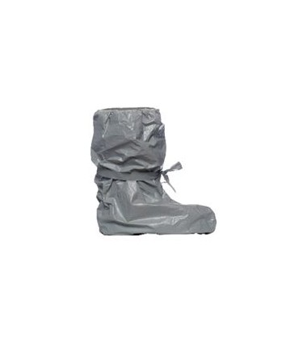
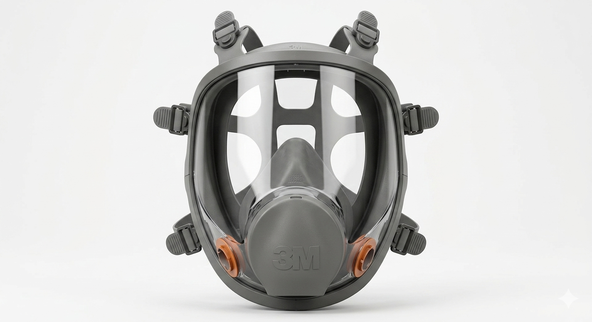

Catálogo de Cuidado y Coleccionables
Equípate para la prevencion o expande tu colección científica.

Traje Hazmat Nivel A (Completo) OFERTA!!!
Al ensamblar todas las piezas, se crea un microambiente sellado de pies a cabeza que elimina los puntos débiles de exposición, ofreciendo un equipo estándar de alto rendimiento que combina una ligereza excepcional con la máxima robustez exigida por los protocolos internacionales de seguridad radiológica.
$899.99 Añadir al Carrito
Traje Hazmat Reforzado
Este overol profesional está fabricado con una tela laminada de alta resistencia que ofrece una barrera física contra partículas sólidas y salpicaduras ligeras de químicos, incluyendo polvo contaminado por radiación.
$380.00 Añadir al Carrito
Cubrebotas de Protección Hazmat
Estos protectores están diseñados con el mismo material repelente del traje principal y cuentan con cintas de amarre integradas para sellar herméticamente el área del tobillo sobre el calzado de seguridad.
$320.00 Añadir al Carrito
Respirador con Filtro de Yodo (Modelo 3M Serie 6800)
Máscara táctica con doble filtro de carbón activado para prevenir la inhalación de partículas pesadas. Esta pieza de vital seguridad ofrece un sellado hermético superior gracias a su estructura de elastómero de alta calidad.
$250.00 Añadir al Carrito
Guantes de Protección Química y Radiológica Hazmat
Están fabricados en caucho de butilo de alta resistencia, proporcionando una barrera superior contra la permeación de agentes químicos agresivos y partículas contaminantes. Su diseño ergonómico incluye una textura antideslizante en las palmas para asegurar un agarre firme en condiciones húmedas.
$100.00 Añadir al Carrito